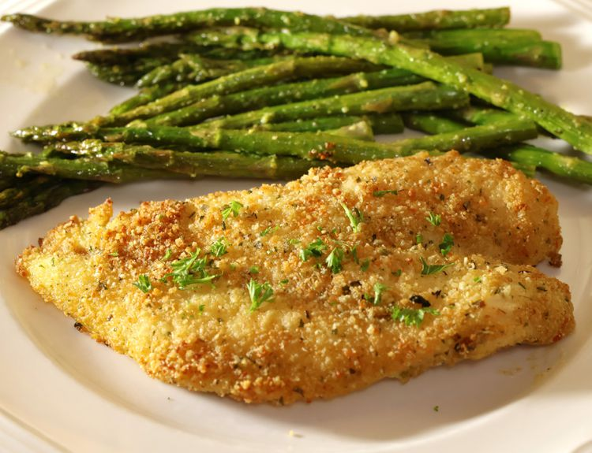

Baked Orange Roughy, Italian-Style
Home

Description
The flavor of this delicate baked orange roughy is enhanced with Italian-style seasonings that are sure to please even the pickiest eater. It's quick, easy, and simply delicious.
Description
- Nonstick cooking spray
- ¼ cup Italian-seasoned bread crumbs
- 2 tablespoons grated Parmesan cheese
- 2 tablespoons grated Romano cheese
- ½ teaspoon salt, or to taste
- ¼ teaspoon garlic powder
- 1 pound orange roughy fillets
- ¼ cup butter, melted
- 1 tablespoon chopped fresh parsley
Steps
- Preheat the oven to 400 degrees F (200 degrees C). Coat a medium baking dish with nonstick spray.
- Mix bread crumbs, Parmesan cheese, Romano cheese, salt, and garlic powder together in a shallow bowl.
- Brush orange roughy fillets on both sides with melted butter, then dredge in the bread crumb mixture. Arrange fillets in a single layer in the prepared baking dish and sprinkle with parsley.
- Bake in the preheated oven until fish flakes easily with a fork, 10 to 15 minutes.